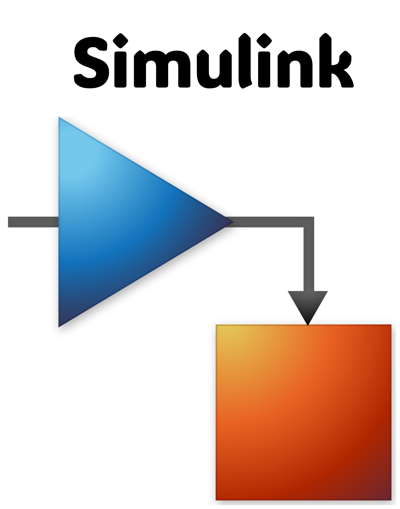
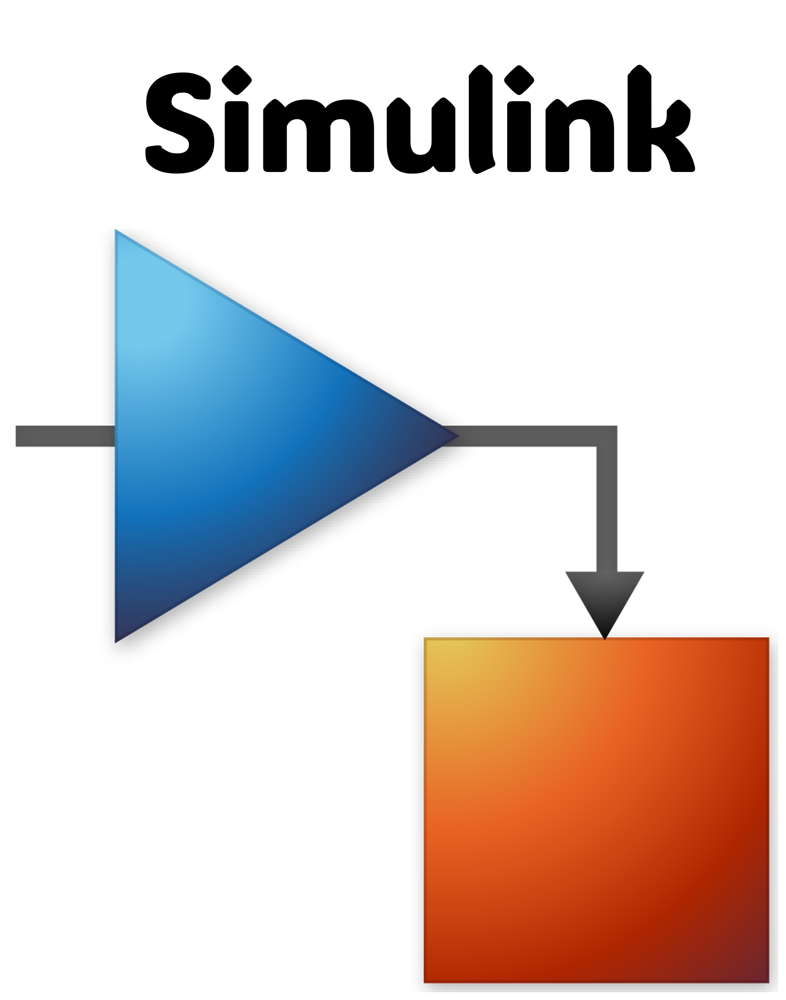

Lucía Herrero
Ingeniera Industrial & Analista de Datos
Ingeniera Industrial & Analista de Datos

¡Encantada! Soy Lucía Herrero. He creado esta web para poder mostrar mi portfolio y para que, quien esté interesado, pueda comprender un poco mejor mi trayectoria profesional y académica, además de mis habilidades.
En esta primera sección os hablaré de mí desde una perspectiva más humana, e incluso con cierto atisbo literario, para quien quiera conocerme más a fondo. Después, en las siguientes pestañas, os describiré de una manera más práctica mi recorrido, y también os mostraré mis primeros proyectos.
Si veis algún fallo en la web, no dudéis en decírmelo. Estos son mis primeros pinitos con la programación, así que habrá un montón que mejorar. ¡Espero que os guste!
7 de noviembre de 1997, Oviedo, Asturias. Amanece bajo un cielo frío y gris, como es costumbre. Cientos de nubes abrazan la ciudad con la típica serenidad de un otoño asturiano. No es el clima idóneo para que un girasol crezca, pero sí es el escenario perfecto para la llegada de una niña que, aunque nace en silencio, trae consigo una promesa: la de poner el mundo patas arriba.
Siempre he sido curiosa por naturaleza. Nunca me he conformado con saber cómo ocurren las cosas, sin buscar después un por qué. Quizás por eso el camino de las ciencias me parecía el más atractivo.
Con mis ganas insaciables de aprender y mi ambición por superarme constantemente, decidí estudiar ingeniería industrial a pesar de las críticas sobre su dificultad (que incluso motivaban mis ganas). Durante los 4 años del Grado me sentí como en casa. Llegué a ser de las mejores estudiantes de la promoción, consiguiendo varias matrículas de honor y algún que otro reconocimiento de excelencia académica. No podía pedir más.
Después continué con el Máster, independizándome por primera vez. El primer año viví y estudié en Madrid y el segundo año lo cursé en Estocolmo, con el programa Erasmus. No quiero extenderme con mi experiencia en Estocolmo, porque podría pasarme una vida entera hablando del tema, y no es el objeto de esta web. Sólo comentar que fue la mejor época de mi vida hasta hoy, y también el mayor punto de inflexión. Volví, supuestamente con todos los estudios terminados, pero... ¿y ahora qué?
Comenzamos la larga y controvertida "etapa laboral". Es esa etapa en la que puede (digo "puede" por parecer optimista) que te encuentres trabajos para los que no hacía falta haber estudiado duramente durante 6 años, sueldos que debería dar vergüenza ofrecer, gestiones nefastas de los nuevos talentos, contratos temporales con cero garantías, oportunidades de desarrollo imaginarias... Pero "es lo que hay" (supongo).
Recuerdo una conversación con mi manager cuando empecé mi segundo trabajo: "Siento que hay algo que me impide brillar", le dije. Concluimos, sin mucho convencimiento, en que simplemente necesitaba más tiempo. Y tras acumular 3 años de experiencia profesional, decidí parar. Me di cuenta de que esta experiencia me había hecho crecer un montón. Y justo eso es lo que me ayudó a entender que necesitaba parar. Porque cuando el camino era el correcto, siempre había brillado.
Hoy estoy tremendamente agradecida de aquella arriesgada decisión que muchos no entendieron. Mucha gente me ve por fuera como alguien sociable, dulce, alegre. Pero mi yo primario es innovador, es ambicioso, es rebelde, es inconformista y es valiente. Y no puedo fallarle a mi yo primario.
Así que tras mucho comerme el coco, supe que había encontrado lo que me faltaba. Un enfoque más rompedor, más tecnológico, más poderoso, más relevante. Ahondar en el corazón del negocio y sumergirme en el mundo de los datos.
Y lo supe porque en cuanto lo ví volví a brillar.

Un análisis de fugas y modelo predictivo utilizando Python.
Ver en TableauAnálisis y predicción de cadena de suministro en industria.
Ver en GitHubEn esta sección podéis encontrar un resumen de mi recorrido tanto académico como profesional. Más abajo, tenéis el timeline vertical para más detalles.

Neoland
2024 - Presente
PERFIL PROFESIONAL:
Este Bootcamp de Data Analytics forma a profesionales con habilidades sólidas en análisis y visualización de datos. Los graduados adquirirán la capacidad de interpretar conjuntos de datos complejos, aplicar técnicas estadísticas y matemáticas, y aprovechar el Aprendizaje Automático y la IA para obtener conocimientos. A través de proyectos prácticos, serán expertos en transformar datos en decisiones estratégicas, lo que los convierte en activos valiosos tanto para grandes corporaciones como para startups.
CONTENIDOS:
Schneider Electric
2022 - 2024
RESUMEN DEL ROL:
Fui responsable de supervisar la calidad de los procesos en un proyecto de fabricación de dispositivos eléctricos de protección, centrándome en el diseño, la optimización y la validación de procesos en entornos exigentes, como una sala blanca.
RESPONSABILIDADES CLAVE:
Accenture
2021 - 2022
RESUMEN DEL ROL:
Trabajé en un equipo multicultural para analizar los modelos de negocio de los clientes y desarrollar estrategias para mejorar sus operaciones a través de nuevas tecnologías.
RESPONSABILIDADES CLAVE:
ISDI
2021
PERFIL PROFESIONAL:
Este curso proporciona una exploración integral de las estrategias y tecnologías de transformación digital, centrándose en cómo las empresas pueden aprovechar las herramientas digitales para innovar, mejorar la eficiencia y mantenerse competitivas. Los participantes adquirirán experiencia práctica con tecnologías digitales, aprenderán a desarrollar estrategias digitales y comprenderán el impacto de la transformación en diversas funciones empresariales.
CONTENIDOS:
Universidad Politécnica de Madrid & KTH
2019 - 2021
Máster habilitante de 2 años en la UPM: comprende 1 año en el programa Erasmus en la universidad KTH Estocolmo
PERFIL PROFESIONAL:
Este programa de máster forma a profesionales con un equilibrio de habilidades de ingeniería y liderazgo, permitiéndoles adaptarse a varios roles y conducir avances tecnológicos en el sector industrial. Enfatiza tanto la experiencia técnica como la gestión estratégica, preparando a los graduados para resolver problemas complejos, tomar decisiones críticas y liderar la innovación en la industria.
CONTENIDOS:
Thyssenkrupp
2019
RESUMEN DEL ROL:
Como ingeniera de proyectos en prácticas, trabajé tanto en proyectos para clientes como en proyectos internos. Participé en la fase de desarrollo del diseño de una escalera mecánica para un cliente y contribuí a un proyecto interno de automatización para la herramienta de diseño de la empresa.
RESPONSABILIDADES CLAVE:
Teical
2018
RESUMEN DEL ROL:
Como ingeniera de proyectos en prácticas, participé en la fase de desarrollo de proyectos para sistemas de seguidores solares, perfeccionando habilidades en optimización de diseño, análisis estructural y resolución técnica de problemas para apoyar soluciones exitosas en energía renovable.
RESPONSABILIDADES CLAVE:
Universidad de Oviedo
2015 - 2019
PERFIL PROFESIONAL:
Este grado proporciona conocimientos científicos y tecnológicos para formar profesionales versátiles capaces de satisfacer las necesidades de las empresas en el campo de las tecnologías industriales, resolviendo problemas y tomando decisiones con razonamiento crítico.
CONTENIDOS:


 
